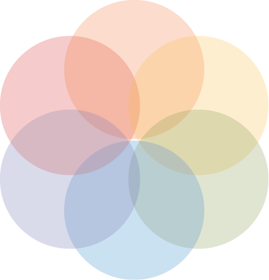

Designing for users on the autistic spectrum
Do...
use simple colours
more info
write in plain English

use simple sentences and bullets

make buttons descriptive
build simple and consistent layouts
Don't...

use bright contrasting colours

use figures of speech and idioms

create a wall of text

make buttons vague and unpredictable

build complex and cluttered layouts